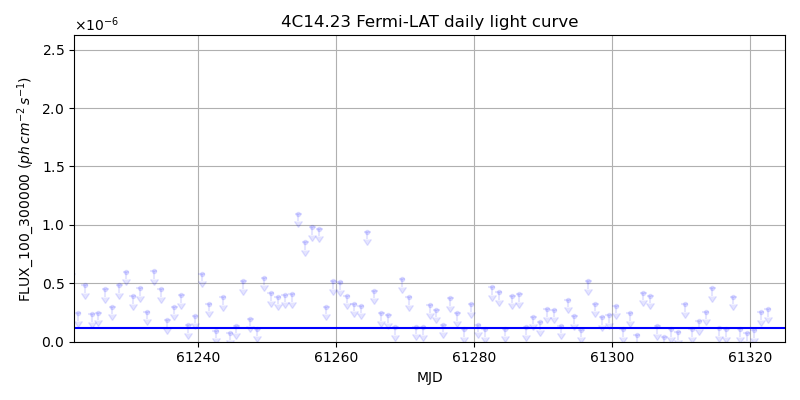
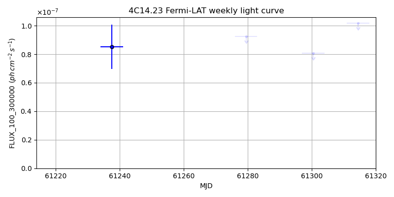
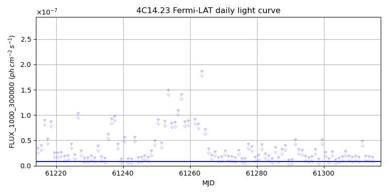
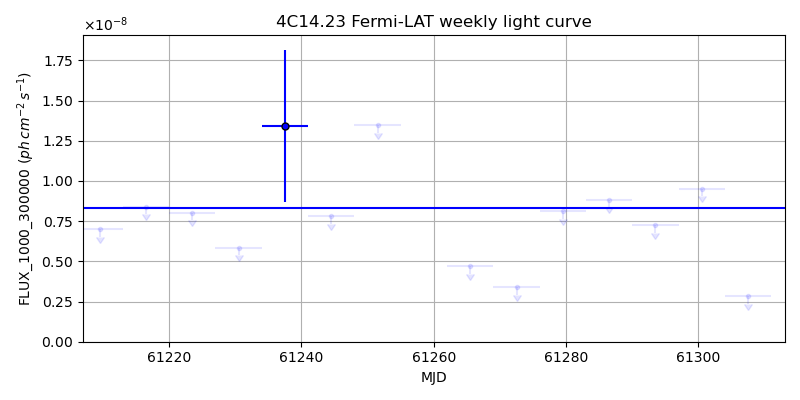

LAT Lightcurve site: https://fermi.gsfc.nasa.gov/ssc/data/access/lat/msl_lc/source/4C_14d23
NED: Query
Time of last update of this page: UT: 2026-10-02 15:18 (MJD: 61315.638)
| Property | Value |
|---|---|
| R.A. | 7:25:16.80 |
| Dec. | 14:25:12.0 |
| z | 1.039 |
| 3FGL SpectrumType | LogParabola |
| 3FGL PL Index | |
| 3FGL Flux_100_300000 | 1.14e-07 1 / (s cm2) |
| 3FGL Flux_1000_300000 | 8.34e-09 1 / (s cm2) |
| 3FGL Flux >200 GeV | 4.99e-12 1 / (s cm2) |
| 3FGL Extrap. Crab >200 GeV | 0.02 |
| 3FGL Flux After EBL Absorption >200GeV | 7.11e-14 1 / (s cm2) |
| 3FGL EBL Crab Fraction >200GeV | 0.00 |

| MJD | dMJD | Flux | dFlux | Frac3FGL | FracCrab>200GeV | EBLFracCrab>200GeV |
|---|---|---|---|---|---|---|
| 61310.50 | 0.50 | 3.21e-07 | 0.00e+00 | 0.00 | 0.00 | 0.00 |
| 61311.50 | 0.50 | 1.05e-07 | 0.00e+00 | 0.00 | 0.00 | 0.00 |
| 61312.50 | 0.50 | 1.76e-07 | 0.00e+00 | 0.00 | 0.00 | 0.00 |
| 61313.50 | 0.50 | 2.58e-07 | 0.00e+00 | 0.00 | 0.00 | 0.00 |
| 61314.50 | 0.50 | 4.57e-07 | 0.00e+00 | 0.00 | 0.00 | 0.00 |

| MJD | dMJD | Flux | dFlux | Frac3FGL | FracCrab>200GeV | EBLFracCrab>200GeV |
|---|---|---|---|---|---|---|
| 61279.50 | 3.50 | 9.24e-08 | 0.00e+00 | 0.00 | 0.00 | 0.00 |
| 61286.50 | 3.50 | 1.74e-07 | 0.00e+00 | 0.00 | 0.00 | 0.00 |
| 61293.50 | 3.50 | 1.30e-07 | 0.00e+00 | 0.00 | 0.00 | 0.00 |
| 61300.50 | 3.50 | 8.06e-08 | 0.00e+00 | 0.00 | 0.00 | 0.00 |
| 61307.50 | 3.50 | 1.27e-07 | 0.00e+00 | 0.00 | 0.00 | 0.00 |

| MJD | dMJD | Flux | dFlux | Frac3FGL | FracCrab>200GeV | EBLFracCrab>200GeV |
|---|---|---|---|---|---|---|
| 61310.50 | 0.50 | 1.76e-08 | 0.00e+00 | 0.00 | 0.00 | 0.00 |
| 61311.50 | 0.50 | 4.96e-08 | 0.00e+00 | 0.00 | 0.00 | 0.00 |
| 61312.50 | 0.50 | 1.94e-08 | 0.00e+00 | 0.00 | 0.00 | 0.00 |
| 61313.50 | 0.50 | 1.93e-08 | 0.00e+00 | 0.00 | 0.00 | 0.00 |
| 61314.50 | 0.50 | 1.81e-08 | 0.00e+00 | 0.00 | 0.00 | 0.00 |

| MJD | dMJD | Flux | dFlux | Frac3FGL | FracCrab>200GeV | EBLFracCrab>200GeV |
|---|---|---|---|---|---|---|
| 61279.50 | 3.50 | 8.12e-09 | 0.00e+00 | 0.00 | 0.00 | 0.00 |
| 61286.50 | 3.50 | 8.84e-09 | 0.00e+00 | 0.00 | 0.00 | 0.00 |
| 61293.50 | 3.50 | 7.24e-09 | 0.00e+00 | 0.00 | 0.00 | 0.00 |
| 61300.50 | 3.50 | 9.52e-09 | 0.00e+00 | 0.00 | 0.00 | 0.00 |
| 61307.50 | 3.50 | 2.84e-09 | 0.00e+00 | 0.00 | 0.00 | 0.00 |
--------------------------------------------------------- Using user-supplied coords: 7:25:16.80 14:25:12.0 2000 --------------------------------------------------------- FLWO UT night of: 2026-10-03 Local Sid. @ Midnight: 00:24 Sunset (-15.0) (local, UT): 19:14 02:14 Sunrise (-15.0) (local, UT): 05:12 12:12 Moonrise (local, UT): 22:48 05:48 Moonset (local, UT): Moon phase: 0.53 --------------------------------------------------------- AzTime LSID UT Obj_el Obj_az Mn_el Mn_az Sep. --------------------------------------------------------- 19:14 19:37 02:14 -43.9 3.5 -28.5 20.1 20.3 19:44 20:07 02:44 -42.9 13.5 -26.2 26.7 20.0 20:14 20:37 03:14 -40.9 22.9 -23.2 32.8 19.6 20:44 21:07 03:44 -38.0 31.5 -19.6 38.5 19.3 21:14 21:37 04:14 -34.3 39.3 -15.7 43.6 19.0 21:44 22:07 04:44 -29.9 46.2 -11.3 48.4 18.8 22:14 22:37 05:14 -25.1 52.3 -6.5 52.7 18.5 22:44 23:07 05:44 -19.8 57.8 -0.8 56.7 18.3 23:14 23:37 06:14 -14.3 62.7 3.8 60.4 18.0 23:44 00:07 06:44 -8.5 67.2 9.1 63.9 17.8 00:14 00:38 07:14 -1.5 71.4 14.6 67.1 17.6 00:44 01:08 07:44 3.8 75.3 20.3 70.2 17.4 01:14 01:38 08:14 10.0 79.1 26.1 73.1 17.2 01:44 02:08 08:44 16.2 82.8 32.1 76.0 17.0 02:14 02:38 09:14 22.6 86.6 38.1 78.8 16.9 02:44 03:08 09:44 29.0 90.5 44.2 81.7 16.7 03:14 03:38 10:14 35.4 94.6 50.3 84.8 16.6 03:44 04:08 10:44 41.7 99.2 56.5 88.1 16.4 04:14 04:38 11:14 48.0 104.4 62.7 91.9 16.3 04:44 05:08 11:44 54.1 110.8 68.9 96.9 16.1 05:12 05:37 12:12 59.6 118.4 74.7 103.8 16.0 --------------------------------------------------------- Dark hours >55 deg.: 0.00